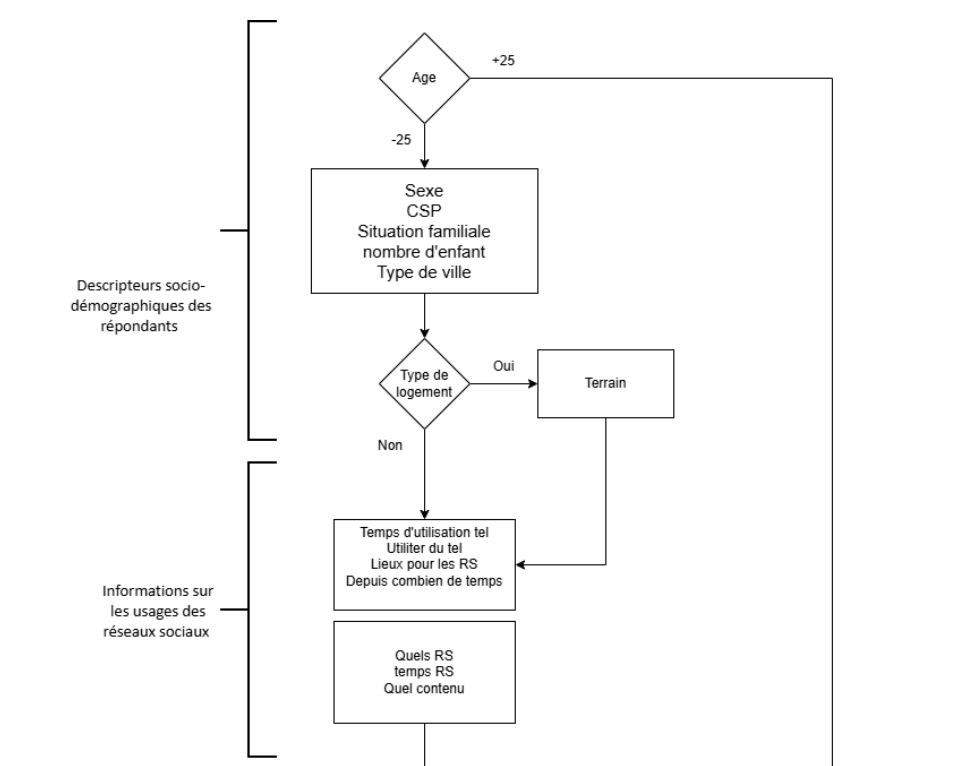

🗄️ SAÉ — Mise en œuvre d'une enquête
Création d'une enquête destinée aux jeunes sur l'utilisation des réseaux sociaux, avec le logiciel Sphinx.
La première étape de toute étude est la collecte des données. De nombreuses méthodes existent pour cela. Dans certains cas, l'enquête est la meilleure méthode. Pour nous y former, nous avons eu des cours ainsi que ce projet. Nous avions une après-midi pour créer une enquête sur l'usage des réseaux sociaux auprès des jeunes. Cela était à faire par groupe de 3 à 4.
Pour ce faire, nous avons utilisé le logiciel Sphinx. Nous avons commencé par réaliser l'algorithme du questionnaire (visible dans les illustrations), puis nous avons créé l'enquête. Elle devait à la fois respecter les formes de l'enquête et être visuellement attractive et en adéquation avec le thème. Les questions fermées étaient à privilégier pour faciliter un éventuel traitement futur. Un compte rendu écrit était attendu.
La principale difficulté a été d'appréhender la structure de l'enquête ainsi que le logiciel Sphinx.
